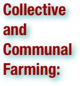
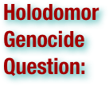
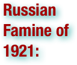
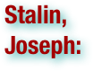
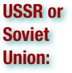

Democide in the USSR: Terms
.pdf (. . . )


Agitprop is derived from agitation and propaganda. The term originated in Soviet Russia (the future USSR), where the term was a shortened form of . . . [the] Department for Agitation and Propaganda, which was part of the Central and regional committees of theCommunist Party of the Soviet Union. The department was later renamed Ideological Department. (wikipedia.org. Accessed on July 24, 2011.)

Cannibalism is the act or practice of humans eating the flesh of other human beings. It is also called anthropophagy. A person who practices cannibalism is called a cannibal. (wikipedia.org. Accessed on July 24, 2011.)


Collective farming and communal farming are types of agricultural production in which the holdings of several farmers are run as a joint enterprise. This type of collective is essentially an agricultural production cooperative in which member-owners engage jointly in farming activities. Typical examples of collective farms are the kolkhozy that dominated Soviet agriculture between 1930 and 1991 and the Israeli kibbutzim. Both are collective farms based on common ownership of resources and on pooling of labor and income in accordance with the theoretical principles of cooperative organizations. They are radically different, however, in the application of the cooperative principles of freedom of choice and democratic rule. The creation of kolkhozy in the Soviet Union during the country-wide collectivization campaign of 1928-1933 was an example of forced collectivization, whereas the kibbutzim in Israel were traditionally created through voluntary collectivization and were governed as democratic entities. The element of forced or state-sponsored collectivization that was present in many countries during the 20th century led to the impression that collective farms operate under the supervision of the state, but this is not universally true, as shown by the counter-example of the Israeli kibbutz. (wikipedia.org. Accessed on July 24, 2011.)

Collectivization in the Soviet Union was a policy pursued under Stalin between 1928 and 1940. The goal of this policy was to consolidate individual land and labour into collective farms (Russian: kolkhoz, plural kolkhozy). The Soviet leadership was confident that the replacement of individual peasant farms by kolkhozy would immediately increase the food supply for urban populations, the supply of raw materials for processing industry, and agricultural exports. Collectivization was thus regarded as the solution to the crisis of agricultural distribution (mainly in grain deliveries) that had developed since 1927. This problem became more acute as the Soviet Union pressed ahead with its ambitious industrialization program. Already in the early 1930s over 90% of agricultural land was "collectivized" as rural households entered collective farms with their land, livestock, and other assets. The sweeping collectivization often involved tremendous human and social costs. (wikipedia.org. Accessed on July 24, 2011.)


A counter-revolutionary is anyone who opposes a revolution, particularly those who act after a revolution to try to overturn or reverse it, in full or in part. The adjective, "counterrevolutionary", pertains to movements that would restore the state of affairs, or the principles, that prevailed during a pre-revolutionary era. (wikipedia.org. Accessed on July 24, 2011.)


Crimes against humanity, as defined by the Rome Statute of the International Criminal Court Explanatory Memorandum, "are particularly odious offenses in that they constitute a serious attack on human dignity or grave humiliation or a degradation of one or more human beings. They are not isolated or sporadic events, but are part either of a government policy (although the perpetrators need not identify themselves with this policy) or of a wide practice of atrocities tolerated or condoned by a government or a de facto authority. Murder; extermination; torture; rape; political, racial, or religious persecution and other inhumane acts reach the threshold of crimes against humanity only if they are part of a widespread or systematic practice. Isolated inhumane acts of this nature may constitute grave infringements of human rights, or depending on the circumstances, war crimes, but may fall short of falling into the category of crimes under discussion." (wikipedia.org. Accessed on July 24, 2011.)

Dekulakization was the Soviet campaign of political repressions, including arrests, deportations, and executions of millions of the better-off peasants and their families in 1929-1932. The richer peasants were labeled kulaks and considered class enemies. More than 1.8 million peasants were deported in 1930-1931. The stated purpose of the campaign was to fight the counter-revolution and build socialism in the countryside. This policy was accomplished simultaneously with collectivization in the USSR and effectively brought all agriculture and peasants in the Soviet Russia under state control. The "liquidation of the kulaks as a class" was announced by Stalin on 27 December 1929. The decision was formalized in a resolution "On measures for the elimination of kulak households in districts of comprehensive collectivization" on January 30, 1930. All kulaks were divided into three categories: (I) to be shot or imprisoned as decided by the local secret political police; (II) to be sent to Siberia, North, the Urals or Kazahstan, after confiscation of their property; and (III) to be evicted from their houses and used in labour colonies within their own districts. OGPU secret police chief, Efim Georgievich Evdokimov, (1891-1939) organized and supervised the roundup of peasants and the mass executions. A combination of dekulakization, collectivization, and other repressive policies led to mass starvation in many parts of the Soviet Union and the death of at least 14.5 million peasants in 1930-1937, including 5 million who died in Ukraine during the Holodomor. (wikipedia.org. Accessed on July 24, 2011.)


Democide is a term revived and redefined by the political scientist R. J. Rummel as "the murder of any person or people by a government, including genocide, politicide, and mass murder." Rummel created the term as an extended concept to include forms of government murder that are not covered by the legal definition of genocide, and it has found currency among other scholars. Rummel presents his definition without referencing any previous uses, but the term democide was defined and used in English more than 40 years earlier by Theodore Abel. (wikipedia.org. Accessed on July 24, 2011.)

A famine is a widespread scarcity of food. . . This phenomenon is usually accompanied or followed by regional malnutrition, starvation, epidemic, and increased mortality. (wikipedia.org. Accessed on July 24, 2011.)

A fifth column is a group of people who clandestinely undermine a larger group such as a nation from within. (wikipedia.org. Accessed on July 24, 2011.)


The Genocide of Poles in the Soviet Union often referred to as, the Polish operation of the NKVD, was a coordinated action of the Soviet NKVD and the Communist Party in 1937–1938 against the entire Polish minority living in the Soviet Union, representing only 0.4 percent of Soviet citizens. It was the largest ethnic shooting and deportation action during the Great Terror, done according to the NKVD Order № 00485 entitled "On the liquidation of the Polish diversionist and espionage groups and POW units." The agents of the Soviet state-police gathered Polish-sounding names from local telephone books in order to speed up the process. In Leningrad alone, almost 7,000 citizens were rounded up. A vast majority of them were executed within 10 days of arrest. In the next fourteen months 143,810 people of Polish background were captured, of whom 139,885 were sentenced by extrajudicial organs, and 111,091 murdered (nearly 80% of all victims). (wikipedia.org. Accessed on July 24, 2011.)

The Great Purge was a series of campaigns of political repression and persecution in the Soviet Union orchestrated by Joseph Stalin from 1936 to 1938. It involved a large-scale purge of the Communist Party and government officials, repression of peasants, Red Army leadership, and the persecution of unaffiliated persons, characterized by widespread police surveillance, widespread suspicion of "saboteurs", imprisonment, and arbitrary executions. In Russian historiography the period of the most intense purge, 1937–1938, is called Yezhovshchina (the Yezhov regime), after Nikolai Yezhov, the head of the Soviet secret police, NKVD. (wikipedia.org. Accessed on July 24, 2011.)

The Gulag was the government agency that administered the main Soviet forced labor camp systems. While the camps housed a wide range of convicts, from petty criminals to political prisoners, large numbers were convicted by simplified procedures, such as NKVD troikas and other instruments of extrajudicial punishment, and the Gulag is recognized as a major instrument of political repression in the Soviet Union. GULag is the acronym for Chief Administration of Corrective Labor Camps and Colonies of the NKVD. It was officially created on April 25, 1930 and dissolved on January 13, 1960. Eventually . . . the usage of "the Gulag" began generally denoting the entire penal labor system in the USSR, then any such penal system. On March 1940, there were 53 separate camps and 423 labor colonies in the USSR. Today's major industrial cities of the Russian Arctic, such as Norilsk, Vorkuta, and Magadan, were originally camps built by prisoners and run by ex-prisoners. (wikipedia.org. Accessed on July 24, 2011.)

The Holodomor (literal translation Killing by hunger) was a man-made famine in the Ukrainian SSR. During the famine, which is also known as the "terror-famine in Ukraine" and "famine-genocide in Ukraine", millions of Ukrainians died of starvation in a peacetime catastrophe unprecedented in the history of Ukraine. Early estimates of the death toll by scholars and government officials varied greatly; anywhere from 1.8 to 12 million ethnic Ukrainians were said to have been killed as a result of the famine. Recent research has since narrowed the estimates to between 2.4 and 7.5 million. The exact number of deaths is hard to determine, due to a lack of records, but the number increases significantly when the deaths inside heavily Ukrainian-populated Kuban are included. The demographic deficit caused by unborn or unrecorded births is said to be as high as 6 million. Older estimates are still often cited in political commentary. Scholars disagree on the relative importance of natural factors and bad economic policies as causes of the famine and the degree to which the destruction of the Ukrainian peasantry was premeditated on the part of Stalin. Scholars and politicians using the word Holodomor emphasize the man-made aspects of the famine, arguing that it was genocide; some consider the resultant loss of life comparable to the Holocaust. They argue that the Soviet policies were an attack on the rise of Ukrainian nationalism and therefore fall under the legal definition of genocide. Others claim that the Holodomor was a consequence of the economic problems associated with radical economic changes implemented during the period of Soviet industrialization. (wikipedia.org. Accessed on July 24, 2011.)


The Holodomor genocide question is the attempts to determine whether the Holodomor, the disastrous famine in 1933 that claimed millions of lives in Ukraine that is recognized as a crime against humanity by the European Parliament, was an ethnic genocide, a natural catastrophe or democide. Currently, there is no international consensus among scholars or politicians on whether the Soviet policies that caused the famine fall under the legal definition of genocide. As of April 2008, the parliament of Ukraine and the governments of more than 12 countries have recognized the Holodomor as an act of genocide. (wikipedia.org. Accessed on July 24, 2011.)

Kulaks ("fist", by extension "tight-fisted"; kurkuls in Ukraine) were a category of affluent landowners in the later Russian Empire, Soviet Russia, and early Soviet Union. The word kulak originally referred to wealthy independent farmers in the Russian Empire who emerged en masse from peasantry as a result of the Stolypin reform which began in 1906. According to the political theory of Marxism-Leninism developed in the early 1900s, the kulaks were class enemies of the poor peasants, and were described by Vladimir Lenin as "bloodsuckers, vampires, plunderers of the people and profiteers, who fatten on famine.” Marxism-Leninism dictated a revolution that would liberate poor peasants and farm laborers alongside the proletariat (urban and industrial workers). In addition, the planned economy of Soviet Bolshevism required the collectivization of farms and land to allow industrialization of large-scale agricultural production. The critics of these Marxist-Leninist theories claim that they led to years of conflicts and disruption of agriculture when kulaks resisted expropriation of their private property and Soviet officials responded with violent political repression. . . According to the Soviet terminology, the peasants were divided into three broad categories: bednyaks, or poor peasants; serednyaks, or mid-income peasants; and kulaks, the higher-income landowners and farmers who had larger farms than most Russian peasants. In addition, there was a category of batraks, or landless seasonal agriculture workers for hire. (wikipedia.org. Accessed on July 24, 2011.)

Life expectancy is the expected (in the statistical sense) number of years of life remaining at a given age. (wikipedia.org. Accessed on July 24, 2011.)

Malaria is a mosquito-borne infectious disease of humans . . . Symptoms of malaria include fever, shivering, arthralgia (joint pain), vomiting, anemia (caused by hemolysis), hemoglobinuria, retinal damage, and convulsions. The classic symptom of malaria is cyclical occurrence of sudden coldness followed by rigor and then fever and sweating lasting four to six hours, . . children with malaria frequently exhibit abnormal posturing, a sign indicating severe brain damage. Malaria has been found to cause cognitive impairments, especially in children. It causes widespread anemia during a period of rapid brain development and also direct brain damage. This neurologic damage results from cerebral malaria to which children are more vulnerable. (wikipedia.org. Accessed on July 24, 2011.)

The People's Commissariat for Internal Affairs was the public and secret police organization of the Soviet Union that directly executed the rule of power of the Soviets, including political repression, during the era of Joseph Stalin. The NKVD contained the regular, public police force of the USSR (including traffic police, firefighting, border guards and archives) but is better known for the activities of the Gulag and the Main Directorate for State Security (GUGB), which eventually became the Committee for State Security (KGB). It conducted mass extrajudicial executions, ran the Gulag system of forced labor camps, suppressed underground resistance, conducted mass deportations of entire nationalities and Kulaks to unpopulated regions of the country, guarded state borders, conducted espionage and political assassinations abroad, was responsible for influencing foreign governments, and enforced Stalinist policy within communist movements in other countries. (wikipedia.org. Accessed on July 24, 2011.)


NKVD Order № 00485 "On liquidation of Polish sabotage and espionage groups and units of POW (Polish Military Organization, Polska Organizacja Wojskowa) approved on August 9, 1937 by the VKP(b) Central Committee Politburo and signed by Nikolai Yezhov, the People's Commissar for Internal Affairs on August 11, 1937 laid the foundation for systematic repressions of ethnic Poles in 1937 and 1938. The operation was one of national operations of the NKVD. According to the Order, the list of those subject to repression included, among others, "former Polish prisoners of war, defectors from Poland, Polish refugees, Polish political émigrés, those admitted through prisoners' exchange (политобменянные), former members of PPS and other Polish political parties". Polish convicts suspected of espionage that were about to complete their labor camp sentences could not be released and their files had to be referred to the Special Council of the NKVD. Particularly affected were ethnic Poles employed in "strategic" sectors (transportation and telecommunications, defense industry, armed forces, security services, etc.), as well as members of Polish cultural organizations. (wikipedia.org. Accessed on July 24, 2011.)

The North Caucasus (or Ciscaucasia) is the northern part of the Caucasus region between the Black and Caspian Seas and within European Russia. The term is also used as a synonym for the North Caucasus economic region of Russia. Politically, the Northern Caucasus (territory north of the Greater Caucasus Range) includes the Russian Republics of the North Caucasus as well as several regions of Georgia and Azerbaijan. (wikipedia.org. Accessed on July 24, 2011.)

Oblasts are a type of administrative division of Belarus, Bulgaria, Kazakhstan, Kyrgyzstan, Russia, Ukraine, and the now-defunct Soviet Union. Official terms in successor states of the Soviet Union differ, but some still use a cognate of the Russian term, e.g. voblast (voblasts, voblasts) is used for provinces of Belarus, and oblys (plural: oblystar) for provinces of Kazakhstan. (wikipedia.org. Accessed on July 24, 2011.)

Persecution is the systematic mistreatment of an individual or group by another group. The most common forms are religious persecution, ethnic persecution, and political persecution, though there is naturally some overlap between these terms. The inflicting of suffering, harassment, isolation, imprisonment, fear, pain or exclusion. (wikipedia.org. Accessed on July 24, 2011.)

The Politburo (Political Bureau of the Central Committee of the Communist Party of the Soviet Union), known as the Presidium from 1952 to 1966, functioned as the central policymaking and governing body of the Communist Party of the Soviet Union. (wikipedia.org. Accessed on July 24, 2011.)

Political repression is the persecution of an individual or group for political reasons, particularly for the purpose of restricting or preventing their ability to take part in the political life of society. Political repression is sometimes used synonymously with the term political discrimination (also known as politicism). It often is manifested through discriminatory policies, such as human rights violations, surveillance abuse, police brutality, imprisonment, involuntary settlement, stripping of citizen's rights, lustration and violent action such as the murder, summary executions, torture, forced disappearance and other extrajudicial punishment of political activists,dissidents, or general population. Where political repression is sanctioned and organized by the state, it may constitute state terrorism, genocide, politicide or crimes against humanity. Systemic and violent political repression is a typical feature of dictatorships, totalitarian states and similar regimes. In such regimes, acts of political repression may be carried out by secret police forces, army, paramilitary groups or death squads. Relevant activities have also been found within democratic contexts as well. (wikipedia.org. Accessed on July 24, 2011.)

Population transfer in the Soviet Union may be classified into the following broad categories: deportations of "anti-Soviet" categories of population, often classified as "enemies of workers," deportations of entire nationalities, labor force transfer, and organized migrations in opposite directions to fill the ethnically cleansed territories. In most cases their destinations were underpopulated remote areas (see Forced settlements in the Soviet Union). This includes deportations to the Soviet Union of non-Soviet citizens from countries outside the USSR. It has been estimated that, in their entirety, internal forced migrations affected some 6 million people. Of these, some 1 to 1.5 million perished as a result. . . Kulaks (peasants classified as rich by Soviet administration) were the most numerous social group deported by the Soviet Union. Resettlement of people officially designated as kulaks continued until early 1950, including several major waves. Large numbers of kulaks regardless of their nationality were resettled to Siberia and Central Asia. According to data from Soviet archives, which were published in 1990, 1,803,392 people were sent to labor colonies and camps in 1930 and 1931. Books say that 1,317,022 reached the destination. Deportations on a smaller scale continued after 1931. The reported number of kulaks and their relatives who had died in labour colonies from 1932 to 1940 was 389,521. . . The partial removal of potentially trouble-making ethnic groups was a technique used consistently by Joseph Stalin during his career: Poles (1939–1941 and 1944–1945), Romanians (1941 and 1944–1953), Lithuanians, Latvians, Estonians (1941 and 1945–1949), Volga Germans (1941–1945), Ingrian Finns (1929–1931 and 1935–1939), Finnish people in Karelia (1940–1941, 1944), Crimean Tatars, Crimean Greeks, Kalmyks, Balkars, Karachays, Meskhetian Turks, Karapapaks, Terekemes, Far East Koreans (1937), Chechens and Ingushs (1944). Shortly before, during and immediately after World War II, Stalin conducted a series of deportations on a huge scale which profoundly affected the ethnic map of the Soviet Union. It is estimated that between 1941 and 1949 nearly 3.3 million were deported to Siberia and the Central Asian republics. By some estimates up to 43% of the resettled population died of diseases and malnutrition. The deportations started with Poles from Belarus, Ukraine and European Russia 1932-1936. Koreans in the Russian Far East were deported in 1937. (wikipedia.org. Accessed on July 24, 2011.)

. . . with a "small-p" purge was one of the key rituals during which a periodic review of party members was conducted to get rid of the "undesirables". According to Sheila Fitzpatrick in her book Everyday Stalinism such purges were conducted especially during the Cultural Revolution in Soviet Union "bringing excitement into the workday bureaucratic routine". . . The first major purge of the Communist Party ranks was performed by Bolsheviks as early as 1921. About 220,000 members were purged or left the party in 1921. The purge was justified by the necessity to get rid of the members who joined the Party simply to be on the winning side. The major criteria were social origins (members of working classes were normally accepted without question) and contributions to the revolutionary cause. Although this term is mostly associated with Stalinism, the first purge of the Stalin era was performed only in 1929–1930 according to the resolution of the XVI Party Conference. Over 10% of the Party members were purged. . . The next systematic Party purge in the Soviet Union was declared in December 1932 to be performed during 1933. . . this purge concerned members of the Central Committee, Central Revision Committee, which previously were immune to purges, because they were elected at Party Congresses. . . At this time, of 1.9 million members, about 18% were purged. In itself, the term was innocent enough: within 1921–1933 in the Soviet Union, for example, some 800,000 people were purged or left the Party, but suffered no worse fate. But from 1936 onwards, during the Great Purge, the term changed its meaning, because being expelled from the Party came to mean almost certain arrest, imprisonment or even execution. (wikipedia.org. Accessed on July 24, 2011.)

Rationing is the controlled distribution of scarce resources, goods, or services. Rationing controls the size of the ration, one's allotted portion of the resources being distributed on a particular day or at a particular time. (wikipedia.org. Accessed on July 24, 2011.)


The Workers and Peasants Red Army started out as the Soviet Union's revolutionary communist combat groups during the Russian Civil War of 1918-1922. It grew into the national army of the Soviet Union. By the 1930s the Red Army was among the largest armies in history.


The Russian famine of 1921, also known as Povolzhye famine, which began in the early spring of that year, and lasted through 1922, was a severe famine that occurred in Bolshevik Russia. The famine, which killed an estimated 10 million, affected mostly the Volga-Ural region. The famine resulted from the combined effect of economic disturbance, which already started during World War I and continued through the disturbances of the Russian Revolution of 1917 and Russian Civil War with its policy of War Communism, especially prodrazvyorstka. One of Russia's intermittent droughts that occurred in 1921 aggravated the situation to the level of the national catastrophe. Hunger was so severe that it was doubtful that seed-grain would be sown rather than eaten. At one point, relief agencies had to give grain to the railroad staff to get their supplies moved. (wikipedia.org. Accessed on July 24, 2011.)


Joseph Vissarionovich Stalin (18 December 1878 – 5 March 1953) was the Premier of the Soviet Union from 6 May 1941 to 5 March 1953. He was among the Bolshevik revolutionaries who brought about the October Revolution and had held the position of first General Secretary of the Communist Party of the Soviet Union's Central Committee from 1922 until his death in 1953. While formally the office of the General Secretary was elective and was not initially regarded as the top position in the Soviet state, after Vladimir Lenin's death in 1924, Stalin managed to consolidate more and more power in his hands, gradually putting down all opposition groups within the party. This included Leon Trotsky, the Red Army organizer, proponent of world revolution, and principal critic of Stalin among the early Soviet leaders, who was exiled from the Soviet Union in 1929. Instead, Stalin's idea of socialism in one country became the primary line of the Soviet politics. In 1928, Stalin replaced the New Economic Policy of the 1920s with a highly centralized command economy and Five-Year Plans, launching a period of rapid industrialization and economic collectivization in the countryside. As a result, the USSR was transformed from a largely agrarian society into a great industrial power, and the basis was provided for its emergence as the world's second largest economy after World War II. However, during this period of rapid economic and social changes, millions of people were sent to penal labor camps, including many political convicts, and millions were deported and exiled to remote areas of the Soviet Union. The initial upheaval in the changing agricultural sector disrupted food production in the early 1930s, contributing to the catastrophic Soviet famine of 1932–1933, one of the last major famines in Russia. In 1937–38, a campaign against former members of the communist opposition, potential rivals in the party, and other alleged enemies of the regime culminated in the Great Purge, a period of mass repression in which hundreds of thousands of people were executed, including Red Army leaders convicted in coup d'état plots. (wikipedia.org. Accessed on July 24, 2011.)

Stalinism refers to the policies and governmental philosophy of Joseph Stalin, leader and dictator of the Soviet Union from 1924 to 1953. It also refers to the strict and authoritarian state policies of Soviet Union under successors of Stalin. Critics of Stalinism consider it a caricature of socialism and a deviation from the original philosophy of Marxism–Leninism. . . Stalinism, when used in its broadest sense, refers to socialist states comparable to the Stalin-era Soviet Union, i.e., that are characterized by an overly centralized state, totalitarian figure head, secret police, propaganda, and especially brutal tactics of political coercion. According to Encyclopædia Britannica, "Stalinism is associated with a regime of terror and totalitarian rule." (wikipedia.org. Accessed on July 24, 2011.)

Typhoid fever, also known as typhoid, is a common worldwide illness, transmitted by the ingestion of food or water contaminated with the feces of an infected person, which contain the bacterium Salmonella enterica, serovar Typhi. . . This fever received various names, such as gastric fever, abdominal typhus, infantile remittant fever, slow fever, nervous fever, pythogenic fever, etc. The name of "typhoid" comes from the neuropsychiatric symptoms common to typhoid and typhus (from Greek, "stupor"). The impact of this disease fell sharply with the application of modern sanitation techniques. (wikipedia.org. Accessed on July 24, 2011.)

Typhus is any of several similar diseases caused by Rickettsiae. The name comes from the Greek typhos meaning smoky or hazy, describing the state of mind of those affected with typhus. The causative organism Rickettsia is an obligate parasite and cannot survive for long outside living cells. Typhus should not be confused with typhoid fever, as the diseases are unrelated. . . During World War I typhus caused three million deaths in Russia and more in Poland and Romania. De-lousing stations were established for troops on the Western front but the disease ravaged the armies of the Eastern front, with over 150,000 dying in Serbia alone. Fatalities were generally between 10 to 40 percent of those infected, and the disease was a major cause of death for those nursing the sick. Between 1918 and 1922 typhus caused at least 3 million deaths out of 20–30 million cases. In Russia after World War I, during the civil war between the White and Red armies, typhus killed three million, largely civilians. (wikipedia.org. Accessed on July 24, 2011.)

Ukraine is a country in Eastern Europe. It has an area of 603,628 km², making it the largest contiguous country on the European continent. Ukraine borders the Russian Federation to the east and northeast, Belarus to the northwest, Poland,Slovakia and Hungary to the west, Romania and Moldova to the southwest, and the Black Sea and Sea of Azov to the south and southeast, respectively. . . After a chaotic period of incessant warfare and several attempts at independence (1917–21) following World War I and the Russian Civil War, it emerged on December 30, 1922 as one of the founding republics of the Soviet Union. (wikipedia.org. Accessed on July 24, 2011.)


The Soviet Union, officially the Union of Soviet Socialist Republics (USSR, abbreviated СССР, SSSR), was a constitutionally socialist state that existed in Eurasia between 1922 and 1991. An informal name used among its residents was the Union (Soyuz). The Soviet Union had a single-party political system dominated by the Communist Party until 1990. Although the USSR was nominally a union of Soviet republics (15 in all after 1956) with the capital in Moscow, it was actually a highly centralized state with a planned economy. (wikipedia.org. Accessed on July 24, 2011.)